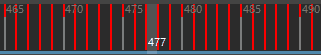
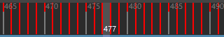
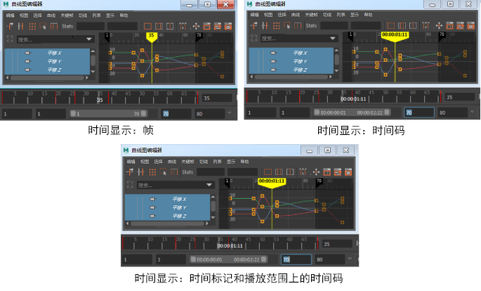

在时间滑块(Time Slider)中的任意位置单击鼠标右键，将显示一个用于执行动画控件操作的菜单。
- “剪切”(Cut)、“复制”(Copy)和“删除”(Delete)
- “剪切”(Cut)、“复制”(Copy)和“删除”(Delete)会影响在当前时间或处于选定范围内的关键帧。“剪切”(Cut)和“复制”(Copy)会将选定关键帧放置到内部剪贴板上以便粘贴，而“删除”(Delete)会从时间轴移除选定的关键帧。“复制”(Copy)、“剪切”(Cut)和“删除”(Delete)还可对整数时间范围进行操作。例如，如果当前时间是 5，则这些项目作用于 5 到 6 的范围，但不包括处于时间 6 的任何关键帧。
- 粘贴(Paste)
- “粘贴”(Paste)会在当前时间放置从剪贴板复制或剪切的所有关键帧。“粘贴 > 粘贴连接”(Paste > Paste Connect)会粘贴复制的关键帧，就像在启用了“连接”(Connect)选项的情况下选择(Edit > Keys > Paste)。
- 有两种方法可以将关键帧粘贴到“时间滑块”(Time Slider)中：
- 单击希望粘贴的关键帧开始的时间。超出该时间的现有关键帧将按粘贴的关键帧的时间范围进行偏移。
- 若要使关键帧适配到某个特定的时间范围，请按住 Shift 键并单击“时间滑块”(Time Slider)来选择时间范围。关键帧将进行缩放以适配该范围。会移除选定区域中的现有关键帧。
- 捕捉(Snap)
-
使用“捕捉”(Snap)以在时间方向上强制将选定关键帧捕捉到最近的整个时间单位。
- 关键帧(Keys)
-
- “转化为关键帧”(Convert to Key)会将选定受控关键点转化为普通关键帧。
- “转化为受控关键点”(Convert to Breakdown)将普通关键帧转化为受控关键点。
- “添加中间帧”(Add Inbetween)将添加单个中间帧。
- “移除中间帧”(Remove Inbetween)将移除单个中间帧。
-
“移除关键帧”(Remove Key)将展开子菜单，从中可以选择用于同时移除多个关键帧的选项：
设置 描述 未捕捉(Unsnapped) 删除未捕捉到整个帧的任何关键帧。如果单击“未捕捉”(Unsnapped) >  以显示选项，则可以设置此操作的时间范围。有关详细信息，请参见“移除关键帧”(Remove key)选项。
以显示选项，则可以设置此操作的时间范围。有关详细信息，请参见“移除关键帧”(Remove key)选项。
当前帧之前(Before Current Frame) 删除当前帧之前的所有关键帧。单击“当前帧之前”(Before Current Frame) >
以查看选项。有关详细信息，请参见“移除关键帧”(Remove key)选项。
当前帧之后(After Current Frame) 删除选定帧之后的所有关键帧。单击“当前帧之后”(After Current Frame) > 以查看选项。有关详细信息，请参见“移除关键帧”(Remove key)选项。
当前范围之外(Outside Current Range) 删除“当前范围之外”(Outside Current Range) > 选项中设置的范围之外的所有关键帧。有关详细信息，请参见“移除关键帧”(Remove key)选项。
选项中设置的范围之外的所有关键帧。有关详细信息，请参见“移除关键帧”(Remove key)选项。
删除涟漪(Ripple Delete) 移除“删除涟漪”(Ripple Delete) > 选项中设置的范围之间的关键帧，并关闭由删除创建的间隙。有关详细信息，请参见“移除关键帧”(Remove key)选项。
选项中设置的范围之间的关键帧，并关闭由删除创建的间隙。有关详细信息，请参见“移除关键帧”(Remove key)选项。
冗余关键帧(Redundant Keys) 移除具有类似值的关键帧以简化动画。单击“冗余关键帧”(Redundant Keys) > 以查看选项。有关详细信息，请参见“移除关键帧”(Remove key)选项。
- 切线(Tangents)
-
“切线”(Tangents)项目将设置当前时间的关键帧或选定时间范围内的所有关键帧的切线。
-
- “样条线”(Spline)将在选定关键帧之前和之后的关键帧之间创建一条平滑的动画曲线。
- “线性”(Linear)会将动画曲线创建为接合两个关键帧的直线。
- “钳制”(Clamped)将创建具有线性和样条曲线特征的动画曲线。
- “阶跃”(Stepped)将创建其出切线为平坦曲线的动画曲线。
- “平坦”(Flat)会将关键帧的入切线和出切线设置为水平（渐变为 0 度）。
- “高原”(Plateau)不仅可以使动画曲线缓入和缓出其关键帧（如样条线切线），而且还可以展平出现在等值关键帧（如钳制切线）之间的曲线分段。
- “自动”(Auto)会根据相邻关键帧值将帧之间的曲线值钳制为最大点或最小点。
- 有关其中每一种切线的详细说明，请参见曲线图编辑器的“切线”(Tangents)菜单。
- Blue Pencil
- 单击 Blue Pencil 以查看 Blue Pencil 帧的运算列表。请参见使用 Blue Pencil 帧。
-
- “插入帧”(Insert Frame(s))会在当前时间添加一个空帧。
- “复制上一帧”(Duplicate Previous Frame)会在当前时间创建上一帧的相同版本。请参见使用 Blue Pencil 帧主题中的复制帧和复制上一帧之间的区别部分，了解何时使用此选项而不是“复制帧”(Copy Frame(s))。
- “删除帧”(Delete Frame(s))会移除当前时间的帧。
- “剪切帧”(Cut Frame(s))会移除当前时间的帧，并将其复制到剪贴板。
- “粘贴帧”(Paste Frame(s))会在当前时间粘贴剪贴板的内容。
- “复制帧”(Copy Frame(s))会将当前帧复制到剪贴板。但是，它不会移除帧。请参见使用 Blue Pencil 帧主题中的复制帧和复制上一帧之间的区别部分，了解何时使用此选项而不是“复制上一帧”(Duplicate Previous Frame)。
- “清除帧”(Clear Frame(s))会清空当前帧中的图形。
- “显示帧”(Display Frames)用于选择帧在时间滑块(Time Slider)上的显示方式：
-
“始终”(Always)会在时间滑块(Time Slider)上显示 Blue Pencil 帧。
-
“选择/上下文活动”(Selection/Context Active)仅在使用 Blue Pencil 时，才会在时间滑块(Time Slider)上显示 Blue Pencil 帧。
-
“禁用”(Off)会在时间滑块(Time Slider)上隐藏 Blue Pencil 帧。
-
- 时间滑块书签(Time Slider Bookmarks)
-
“时间滑块书签”(Time Slider Bookmarks)是沿“时间滑块”(Time Slider)顶部的彩色标记，可标记场景中的事件。书签可让您及时注意特定时刻，当您想要聚焦或亮显场景中的特定区域或时刻时，这非常有用。
-
通过单击(Time Slider Bookmarks > Create)或范围滑块(Range Slider)中的“书签”(Bookmark)图标
 ，或者按 Alt (Option) + T，将书签添加到选定帧或时间范围。
，或者按 Alt (Option) + T，将书签添加到选定帧或时间范围。
-
创建(Create)
打开“创建书签”(Create Bookmark)对话框，以便将书签添加到选定帧。如果未选择任何帧，请在“开始帧”(Start frame)和“结束帧”(End frame)字段中输入书签范围。
-
编辑(Edit)
针对当前时间的书签，打开“创建书签”(Create Bookmark)对话框。（如果多个书签重叠，将选择顶部（最新创建的）书签。）
-
框显书签(Frame Bookmark)
在当前时间的书签上使播放范围居中，以便书签区域占用整个范围。（如果多个书签重叠，将选择顶部（最新创建的）书签。）
热键：|（竖线）
-
框显上一个书签(Frame Previous Bookmark)
在当前时间书签之前的书签上使“范围滑块”(Range Slider)居中。
热键：:（冒号）
-
框显下一个书签(Frame Next Bookmark)
在当前时间书签之后的书签上使“范围滑块”(Range Slider)居中。
热键：,（逗号）
-
取消框显(Unframe)
将“时间滑块”(Time Slider)视图返回到播放范围。
热键：Alt (Option) + \（反斜线）
-
删除(Delete)
删除当前时间最上方的书签。
-
显示书签(Show Bookmarks)
切换书签可见性。
-
删除所有书签(Delete All Bookmarks)
从场景中删除所有书签。
-
书签管理器(Bookmark Manager)
打开“书签管理器”(Bookmark Manager)窗口。
有关详细信息，请参见创建书签。
-
- 颜色编码关键帧(Color-coded Keys)
-
启用此选项可显示具有彩色“调整钮”的关键帧标记，以指示受关键帧影响的动画曲线。

颜色指示在哪条曲线上设置关键帧

“时间滑块”(Time Slider)的颜色编码关键帧标记，显示了每种颜色指示的内容
- 在颜色设置(Color Settings)中为“平移”(Translation)、“旋转”(Rotation)、“缩放”(Scaling)和“其他”(Other)已设置关键帧的属性设置自定义颜色。
- 缓存播放(Cached Playback)
- 可用于激活和配置“缓存播放”(Cached Playback)以提高动画播放性能。
-
- 缓存播放(Cached Playback)
- 启用此选项可将动画缓存到内存以提高播放速度。请参见使用“缓存播放”(Cached Playback)以提高播放速度。
- 缓存模式
- 从“解算缓存”(Evaluation cache)、“视口软件缓存”(Viewport software cache)或“视口硬件缓存”(Viewport hardware cache)中进行选择，以针对计算机硬件优化“缓存播放”(Cached Playback)。有关这些模式的说明，请参见选择缓存播放模式。
- 清除缓存(Flush Cache)
- 清空播放缓存，并丢弃存储的内容，因此所有内容都必须重建。由于数据会立即被删除，因此它的速度可能比缓存失效慢。如果您想将缓存擦除干净，请使用“清除缓存”(Flush Cache)。请参见“缓存播放”(Cached Playback)状态行状态主题中的失效部分。（您还可以通过的播放选项(Playback Options)中的“缓存播放”(Cached Playback)图标
 的快捷菜单清除缓存。）
的快捷菜单清除缓存。）
- 缓存播放首选项(Cached Playback Preferences)
- 打开缓存播放首选项(Cached Playback Preferences)窗口，以便可以配置“缓存播放”(Cached Playback)。
- 颜色首选项(Color preferences)
- 将颜色设置(Color Settings)窗口直接打开到“缓存播放”(Cached Playback)颜色设置，您可以在其中更改在时间滑块(Time Slider)上出现的每个“缓存播放”(Cached Playback)部分的默认颜色。您可以为缓存帧、未缓存帧和无效帧以及子帧拾取颜色。您甚至可以使用不透明度设置来设置“缓存播放”(Cached Playback)状态行的透明度。
- 播放速度(Playback Speed)
-
使用该选项可设置当前场景的播放速度和帧速率。
-
- 实时(Real-time)
-
将当前场景的播放速度设置为每秒 24 帧。
- 自由播放每一帧(Play Every Frame, Free)
-
将当前场景的播放速度设置为播放每一帧，而不会受制于特定的最大帧速率。
- 以最大实时速度播放每一帧(Play Every Frame, Max Real-time)
-
将当前场景的播放速度设置为播放每一帧，但受制于每秒 24 帧的最大帧速率。
- 显示关键帧标记(Display Key Ticks)
- 用于设置“时间滑块”(Time Slider)上显示的关键帧标记的源。请选择：
- 活动(Active)：在活动对象上设置的关键帧。这是默认设置。
- 来自通道盒(From Channel Box)：在“通道盒”(Channel Box)中设置的关键帧。请参见在通道盒中设置关键帧。
- 无(None)：在“时间滑块”(Time Slider)上不显示关键帧标记。
- 显示层权重(Show Layer Weight)：显示选定层的权重动画。
- 从层编辑器显示选项(From Layer Editor Show Options)：使用“动画层编辑器”(Animation Layer Editor)菜单栏的“显示”(Show)菜单中处于活动状态的任何设置。
- 全部影响(All Affecting)：显示所有受影响的动画层的关键帧。（包含场景中所选对象属性的所有层）。
- 活动(Active)：仅显示活动层中的关键帧。
- 选定(Selected)：仅显示选定动画层中的关键帧。
- 活动的和选定的(Active and Selected)：显示活动动画层和所选动画层中的关键帧。
有关详细信息，请参见查看分层动画。
- 播放循环(Playback Looping)
-
若要选择播放循环选项，请在“时间滑块”(Time Slider)上单击鼠标右键，然后选择“播放循环 > 一次”(Playback Looping > Once)、“播放循环 > 往返”(Playback Looping > Oscillate)或“播放循环 > 连续”(Playback Looping > Continuous)（有关此行为的演示，请参见播放选项中的“循环”(Loop)）。 这些选项与使用播放选项和“首选项”(Preferences)窗口中的“循环”(Loop)图标
 相同。
相同。
- 将范围设置为(Set Range To)
-
- “开始/结束”(Start/End)会将播放范围设置为在“播放范围”(Playback Range)数值输入字段中设置的“开始”(Start)和“结束”(End)值。
- “最小值/最大值”(Min/Max)会将播放范围设置为场景的第一个和最后一个关键帧。
- “选定”(Selected)会将播放范围设置为“时间滑块”(Time Slider)上的当前选择所定义的范围。
- “已启用片段”(Enabled clips)会将播放范围设置为包含所有已启用片段的范围。
- “声音长度”(Sound Length)会将播放范围设置为当前加载到“时间滑块”(Time Slider)中的声音的持续时间。
- “首选项”(Preferences)会将播放范围设置为“首选项”(Preferences)窗口中的值。
- 时间显示(Time Display)
-
选择时间信息以何种格式显示在时间标记上：

- 帧(Frames)：在所有时间标尺、当前时间标记以及显示或接受时间的输入字段上显示帧。
- 时间码(Timecode)：在所有时间标尺、当前时间标记以及显示或接受时间的输入字段上显示视频标准时间码。
- 时间标记上的时间码和帧(Timecode and frames on Time Marker)：在时间标记上显示视频标准时间码，而在时间标尺上显示帧。这是在“时间滑块”(Time Slider)首选项的“时间滑块”(Time Slider)选项中设置“时间码”(Timecode)时的传统显示方式
- 启用“阶跃预览”(Stepped Preview)
-
您可以将“阶跃预览”(Stepped Preview)模式在启用和禁用间进行切换，轻松将曲线从样条线切换到阶跃切线以及从阶跃切线切换到样条线。启用此选项后，关键帧可暂时显示为阶跃切线，因此当对象位置碰撞到各个关键帧时，播放动画能提供快速查看对象位置。禁用此选项后，动画将使用原始切线如常播放。另请参见“阶跃”(Stepped)切线。
- 自动捕捉关键帧(Auto snap keys)
-
启用此选项后，关键帧在移动或缩放时会捕捉到最近的整帧。缩放时，如果两个关键帧捕捉到同一帧，它们会合并到一个关键帧中。默认情况下，此首选项处于禁用状态。提示： 也可以选择“窗口 > 设置/首选项 > 首选项 > 时间滑块 > 自动捕捉关键帧”(Windows > Settings/Preferences > Preferences > Time Slider > Auto snap keys)。
- 音频(Audio)
-
此菜单用于选择要在“时间滑块”(Time Slider)上显示的导入的声音。
选择(Sound > <文件名>) >
 。
。
- 播放预览(Playblast)
-
选择该选项会打开“播放预览”(Playblast)窗口。选择该选项框 (
) 会打开“播放预览选项”(Playblast Options)窗口。